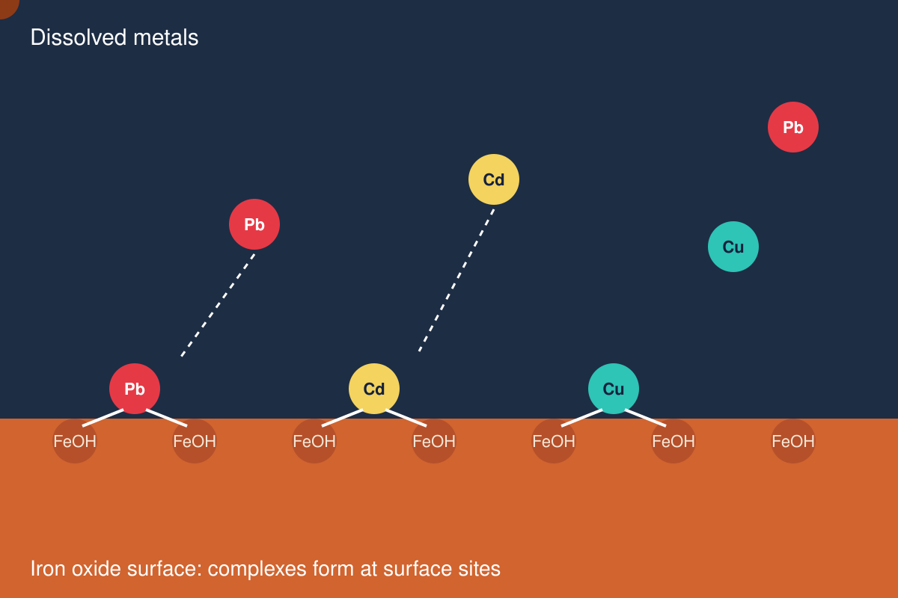

How iron minerals hold on to heavy metals

The problem
Lead, cadmium and copper are widespread pollutants and harmful to human health. Iron oxides in soils and sediments are strong natural sinks for these metals, so they strongly influence how mobile the metals are.
The approach
Surface complexation models describe the oxide surface as a set of reactive sites that bind metal ions much like dissolved ligands, including the effect of pH and surface charge. They let us predict adsorption under conditions we did not measure.
What it gives us
A mechanistic picture of how much metal is held and why, which supports remediation strategies and helps judge when a metal might be released again.
Link to my other work
The same modelling mindset, linking surface chemistry to kinetics, underlies my work on phosphate and iron minerals. You can play with the pH speciation explorer.
References
- Qu, C., Ma, M., Chen, W., Cai, P., Huang, Q. (2017). Surface complexation modeling of Cu(II) sorption to montmorillonite–bacteria composites. Science of the Total Environment, 607, 1408–1418. [Scholar]
- Qu, C., Ma, M., Chen, W., Cai, P., Yu, X.Y., Feng, X., Huang, Q. (2018). Modeling of Cd adsorption to goethite-bacteria composites. Chemosphere, 193, 943–950. [Scholar]
- Qu, C., Du, H., Ma, M., Chen, W., Cai, P., Huang, Q. (2018). Pb sorption on montmorillonite-bacteria composites: a combination study by XAFS, ITC and SCM. Chemosphere, 200, 427–436. [Scholar]
- Du, H., Qu, C., Ma, M., et al. (2019). Insights into Pb(II) binding by Fe/Al hydroxide–microbe composite: XAFS spectroscopy and isothermal titration calorimetry study. Chemical Geology, 510, 84–90. [Scholar]
- Qu, C., Fein, J.B., Chen, W., Ma, M., Cai, P., Huang, Q. (2021). Mechanistic investigation and modeling of Cd immobilization by iron (hydr)oxide-humic acid coprecipitates. Journal of Hazardous Materials, 420, 126603. [Scholar]